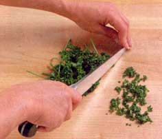

USAGE : Restrict your knives to cutting food - other objects can dull them - and use a legitimate cutting board. I prefer wooden cutting boards, which provide a gentle surface for knives and don't retain bacteria the way plastic boards do. Care for a wooden cutting board by washing it with hot, soapy water and drying it thoroughly after each use. Periodically rub the board with mineral oil to close the wood pores so the board doesn't get dried out - this will eliminate bacteria below the surface.
CLEANING : Wash knives immediately after use to remove any food acids, such as citrus or tomato, that could dull or stain the steel, and don't let the knives soak in the dishwater. Carefully dry knives from the top of the blade down to the sharp edge and put them away. Although some manufactures claim their knives are dishwasher-safe, it's better to wash them by hand.
HONING : A dull knife requires more effort to use and can slip more easily, so keeping your knives sharp is a step toward kitchen safety. Blade edges are slightly dulled every time you use them, so it's a good idea to pass your knives over a sharpening steel after each use. With regular honing, you won't need to professionally grind away the metal more than once a year. According to Bob Topazio, vice president and general manager of Forschner, the steel should have a surface hardness compatible with the Rockwell hardness rating of your knives. In other words, he says, if your knife's steel is harder than your sharpening steel, you're only exercising your wrist. Depending on how often you use your knives, take them to a professional knife sharpener about once a year. Japanese-style knives can only be sharpened on a whetstone or professionally as needed. (See diagram below for knife-honing instructions.)
TO STORE : Throwing your knives in a drawer can permanently dull or scratch them. If you purchased them with a knife block, you can store them that way. The wooden in-drawer knife trays sold by some cutlery manufacturers are nice, but I prefer a magnetic knife holder that can be attached to a wall or cabinet. Just make sure that the magnet is strong enough to hold the knives so that you don't stab a toe. If you have small children, lock knives in a drawer. Put plastic, butter and other safe knives in an easy-to-reach place for kids.
|
 |
|
|